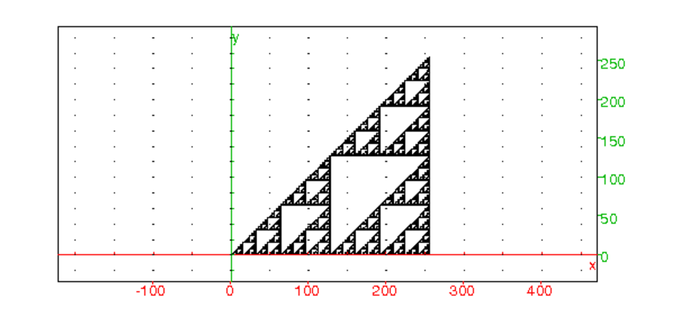
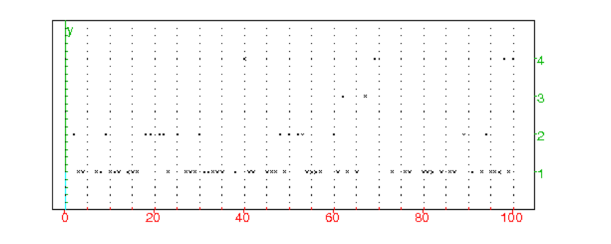
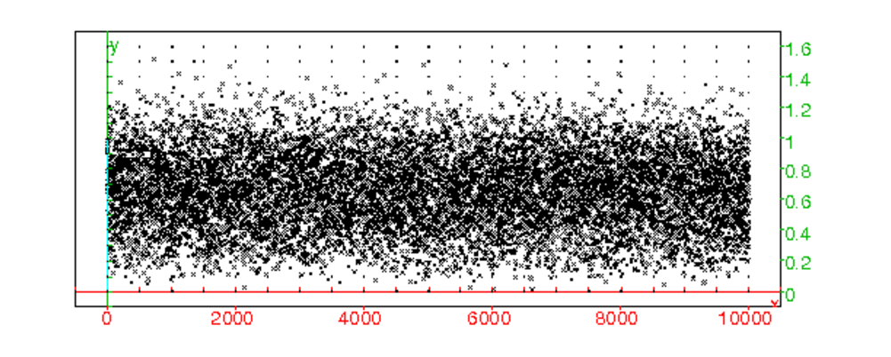

Définition
Un partition de n∈ ℕ est une suite de nombres entiers :
λ1≥ λ2≥ ...λm>0 tels que :
∑j=1mλj =n.
On note p(n) la fonction partage de n : c’est le nombre de partitions
distinctes de n∈ ℕ et on convient que p(0)=1.
Exemples
p(5)=7 car les 7 partitions distinctes de 5 sont :
1+1+1+1+1=5
2+1+1+1=5
2+2+1=5
3+1+1=5
3+2=5
4+1=5
5=5
| A[n,k]= |
| A[n−k,j] et |
| A[n,n]=1 et A[n,0]=0 si n>0 |
| ⎛ ⎜ ⎜ ⎜ ⎜ ⎜ ⎜ ⎜ ⎜ ⎜ ⎜ ⎜ ⎜ ⎜ ⎜ ⎜ ⎜ ⎜ ⎜ ⎜ ⎜ ⎜ ⎜ ⎜ ⎜ ⎜ ⎜ ⎜ ⎜ ⎜ ⎜ ⎜ ⎜ ⎜ ⎝ |
| ⎞ ⎟ ⎟ ⎟ ⎟ ⎟ ⎟ ⎟ ⎟ ⎟ ⎟ ⎟ ⎟ ⎟ ⎟ ⎟ ⎟ ⎟ ⎟ ⎟ ⎟ ⎟ ⎟ ⎟ ⎟ ⎟ ⎟ ⎟ ⎟ ⎟ ⎟ ⎟ ⎟ ⎟ ⎠ |
On tape :
partitions(n):={
local A,j,k,m,S;
A:=idn(n+1);
pour j de 2 jusque n faire
pour k de 1 jusque j-1 faire
S:=0;
pour m de 1 jusque k faire
S:=S+A[j-k,m];
fpour;
A[j,k]:=S;
fpour;
fpour;
retourne A;
}:;
On tape :
A:=partitions(10)
On obtient :
| ⎛ ⎜ ⎜ ⎜ ⎜ ⎜ ⎜ ⎜ ⎜ ⎜ ⎜ ⎜ ⎜ ⎜ ⎝ |
| ⎞ ⎟ ⎟ ⎟ ⎟ ⎟ ⎟ ⎟ ⎟ ⎟ ⎟ ⎟ ⎟ ⎟ ⎠ |
On tape :
sum(A[k])$(k=0..10)
On obtient : 1,1,2,3,5,7,11,15,22,30,42
On peut faire un autre programme qui renverra la matrice B qui sera tel que : si k≤ j, A[j,k] represente le nombre de partitions de j tel que k>=λ1≥ λ2≥ ...λm>0. Autrement dit les lignes de B sont les sommes partielles des lignes de A : B[j,k]=∑m=0kA[j,m] donc
| B[j,k]=B[j−k,k]+B[j,k−1] |
On a donc p(j)=B[j,j].
On tape :
partition(n):={
local B,j,k,m,S;
B:=idn(n+1);
pour k de 1 jusque n faire
B[0,k]:=1;
fpour;
pour j de 1 jusque n faire
pour k de 1 jusque j faire
B[j,k]:=B[j-k,k]+B[j,k-1];
fpour;
pour k de j+1 jusque n faire
B[j,k]:=B[j,j];
fpour;
fpour;
retourne B;
}
:;
On tape :
B:=partition(10)
On obtient :
| ⎛ ⎜ ⎜ ⎜ ⎜ ⎜ ⎜ ⎜ ⎜ ⎜ ⎜ ⎜ ⎜ ⎜ ⎝ |
| ⎞ ⎟ ⎟ ⎟ ⎟ ⎟ ⎟ ⎟ ⎟ ⎟ ⎟ ⎟ ⎟ ⎟ ⎠ |
On remarquera que l’on retrouve la matrice A dans les diagonales montantes
de la matrice B.
On tape :
tran(B)[10]
ou on tape :
col(B,10)
On obtient : [1,1,2,3,5,7,11,15,22,30,42]
ou on tape :
B[j,10]$(j=0..10)
On obtient : 1,1,2,3,5,7,11,15,22,30,42
On tape :
B:=partition(1000):;
On obtient (Evaluation time: 972.05) enfin le résultat...
On tape :
B[200,1000]
On obtient
3972999029388
On tape :
B[1000,1000]
On obtient
24061467864032622473692149727991
Remarque
On peut aussi pour avoir une relation de récurrence considérer les
les partitions P(n,p) de n en une somme d’exactement p éléments
λ1≥ ...≥ λp>0. On dit alors :
P(n,p) =(nombre de partage de n tels que λp=1)+(nombre de partage de n tels que λp>1).
On a :
(nombre de partage de n tels que λp=1)=(nombre de partage de n−1 en
p−1 λj)=P(n−1,p−1)
(nombre de partage de n tels que λp>1)=(nombre de partage de n−p en
p λj)=P(n−p,p)
| P(n,p):=P(n−1,p−1)+P(n−p,p) |
avec P(n,0)=0, P(n,n)=1 et P(n,p)=0 si p>n
On tape et on renvoie la somme des lignes de P :
partage(n):={
local P,j,k,m,S;
P:=idn(n+1);
pour k de 1 jusque n faire
P[k,0]:=0;
fpour;
pour j de 1 jusque n faire
pour k de 1 jusque j faire
P[j,k]:=P[j-1,k-1]+P[j-k,k];
fpour;
fpour;
S:=[];
pour k de 1 jusque n faire
S[k]:=sum(row(P,k));
fpour;
retourne S;
}:;
On tape :
P:=partage(1000):;
On obtient (Evaluation time: 455.81) enfin le résultat...mais c’est deux
fois plus rapide qu’avec B:=partition(1000):;
On tape :
P[200]
On obtient
3972999029388
On tape :
P[1000]
On obtient
24061467864032622473692149727991
relation entre P et A :
On a :
P[n,p]=P[n−1,p−1]+P[n−p,p]
P[n−1,p−1]=P[n−2,p−2]+P[n−p,p−1]....
donc
| P[n,p]= P[n−p,0]+ |
| P[n−p,j] |
avec P[n,0]=0, P[n,n]=1 et P[n,p]=0 si p>n
Si on compare avec les relations obtenus pour A:
| A[n,k]= |
| A[n−k,j] et |
| A[n,n]=1 et A[n,0]=0 si n>0 |
On a les mêmes relations de récurrence, donc :
| P[n,p]=A[n,p] |
Représentation de Young
On peut voir facilement cette égalité, grâce à la repésentation de
Young qui repésente par exemple le partage :
20=7+3+3+2+1+1+1+1+1
par le tableau formé par 20 carrés disposés selon 9 lignes :
7 carrés sur la 1-ière ligne,
3 carrés sur la 2-ième ligne,
3 carrés sur la 3-ième ligne,
2 carrés sur la 4-ième ligne,
1 carré sur de la 5-ième jusqu’à la 9-ième ligne :
| ⎡ ⎢ ⎢ ⎢ ⎢ ⎢ ⎢ ⎢ ⎢ ⎢ ⎢ ⎣ |
| ⎤ ⎥ ⎥ ⎥ ⎥ ⎥ ⎥ ⎥ ⎥ ⎥ ⎥ ⎦ |
Le nombre p de lignes correspond a un partage en une
somme de p éléments et le plus grand élément m de ce partage
est le nombre d’éléments de la première ligne.
Si maintenant on échange les lignes et les colonnes (on prend le transposé
de ce tableau) on obtient une transformation qui au partage :
20=7+3+3+2+1+1+1+1+1 en
une somme de 9 termes ayant comme plus grand élément 7 fait correspondre le
partage :
20=9+4+3+1+1+1+1 en
une somme de 7 termes ayant comme plus grand élément 9 :
| ⎡ ⎢ ⎢ ⎢ ⎢ ⎢ ⎢ ⎢ ⎣ |
| ⎤ ⎥ ⎥ ⎥ ⎥ ⎥ ⎥ ⎥ ⎦ |
On tape :
P:=truncate(product([(1-x^j)$(j=1..20)]),20)
On obtient : -x^15-x^12+x^7+x^5-x^2-x+1
On tape : A:=truncate(series(1/P,x=0,20),20)
On obtient :
627*x^20+490*x^19+385*x^18+297*x^17+231*x^16+176*x^15+ 135*x^14+101*x^13+77*x^12+56*x^11+42*x^10+30*x^9+22*x^8+ 15*x^7+11*x^6+7*x^5+5*x^4+3*x^3+2*x^2+x+1
On tape :symb2poly(A)
ou on tape : coeff(A,x)
On obtient la liste p(20),p(19),..,p(1),p(0):
[627,490,385,297,231,176,135,101,77,56,42,30,22,15,11, 7,5,3,2,1,1]
On tape :lcoeff(A)
On obtient p(20):
627
partitioner(n):={
local A,P;
P:=truncate(product([(1-x^j)$(j=1..n)]),n);
A:=truncate(series(1/P,x=0,n),n);
return revlist(symb2poly(A));
}:;
On tape : partitioner(20)On utilise le théorème du nombre pentagonal d’Euler. Ce théorème donne une relation de récurrence entre p(n) et p(j) pour j<n avec la convention que p(j)=0 lorsque j<0, p(0)=1. Cette relation est :
| p(n)=p(n−1)+p(n−2)−p(n−5)−p(n−7)+p(n−12)+p(n−15)−p(n−22)−p(n−26).... |
| p(n)= |
| (−1)m+1p(n−m(3m−1)/2)+(−1)m+1p(n−m(3m+1)/2) |
Les nombres m(3m−1)/2 et m(3m+1)/2 sont les nombres pentagonaux généralisés. On tape :
partition_euler(n):={
local sg,s1,s2,m,k,j,p;
p:=[1];
pour j de 1 jusque n faire
m:=1;
sg:=1;
s1:=0;
k:=j-m*(3*m-1)/2;
tantque k>=0 faire
s1:=s1+sg*p[k]
sg:=-sg;
m:=m+1;
k:=j-m*(3*m-1)/2;
ftantque;
m:=1;
sg:=1;
s2:=0;
k:=j-m*(3*m+1)/2;
tantque k>=0 faire
s2:=s2+sg*p[k]
sg:=-sg;
m:=m+1;
k:=j-m*(3*m+1)/2;
ftantque;
p[j]:=s1+s2;
fpour;
retourne p;
}:;
On tape :
partition_euler(20)
On obtient :
[1,1,2,3,5,7,11,15,22,30,42,56,77,101,135,176,231,297,385,490,627]
On tape :
P:=partition_euler(1000)
On obtient la liste après 2.77s
On tape :
P[200]
On obtient
3972999029388
On tape :
P[1000]
On obtient
24061467864032622473692149727991
Ramanjan et Hardy ont trouvé une approximation de p(n) qui est :
p(n)≃ eπ√2n/3/4n√3 quand n tend vers
+∞.
On tape :
P(n):=exp(pi*sqrt(2n/3))/(4n*sqrt(3))
floor(evalf(P(1000),31))
On obtient :
24401996316802476288263414942904 au lieu de
24061467864032622473692149727991
Un jury est composé de p personnes que l’on choisit parmi n personnes :
h hommes et f femmes (h+f=n).
Application numérique : p=10, n=17, h=9, f=8.
^j,j,0,p-1)=2^p-1^j,j,n-p,n-1)=2^n-2^(n-p)jurys(n,p):={
local j,k,L,m,M;
//L:=makelist(0,1,comb(n,p));
L:=makelist(0,1,1);
k:=0;
m:=2^p-1;
M:=2^n-2^(n-p);
for (j:=m;j<=M;j++){
if (sum(convert(j,base,2))==p){
L[k]=<j;
k:=k+1;
};
}
return L;
}
:;
On tape :
J:=jurys(17,10):;^(n-1).jurysXY(n,p):={
local LP,L,j,k,l;
LP:=jurys(n,p);
s:=comb(n,p);
l:=s-comb(n-2,p-2);
//L:=makelist(0,1,1);
L:=makelist(0,1,l);
l:=0;
for(k:=0;k<s;k++){
j:=LP[k];
if (irem(j,2)==0 or j<2^(n-1)) {
L[l]=<j;
l:=l+1;
}
}
return L;
}:;
On tape : JXY:=jurysXY(17,10)juryXY(n,p):={
local L,j,k,ls,m,M;
s:=comb(n,p);
l:=s-comb(n-2,p-2);
L:=makelist(0,1,l);
//L:=makelist(0,1,1);
k:=0;
m:=2^p-1;
M:=2^(n-1)-2^(n-p-1);
for(j:=m;j<=M;j++){
if (sum(convert(j,base,2))==p){
L[k]=<j;
k:=k+1;
}
}
M:=2^(n-1)-2^(n-p);
for(j:=m-1;j<=M;j:=j+2){
if (sum(convert(j,base,2))==p-1){
L[k]=<j+2^(n-1);
k:=k+1;
}
}
return L;
}:;
On tape : JXY:=juryXY(17,10)jurytireXY(J):={
local k,n,(s:=size(J));
n:=size(convert(J[s-1],base,2));
k:=1+2^(n-1);
while (irem(k,2)!=0 and k>=2^(n-1)){
k:=J[rand(s)];
}
return k;
}
On tape :
jurytireXY(J)
On obtient par exemple : 54762jury55(h,f,p):={
local L,j,k,M,F,l,p2;
p2:=iquo(p,2);
L:=makelist(0,1,1);
//L:=makelist(0,1,comb(h,5)*comb(f,5));
M:=jurys(h,p-p2);
F:=jurys(f,p2)*2^h;
l:=0;
for(j:=0;j<comb(h,p-p2);j++){
for(k:=0;k<comb(f,p2);k++){
L[l]=<M[j]+F[k];
l:=l+1;
}
}
return L
}:;
J55:=jury55(9,8,10)jurytire55(J,h):={
local k,n,p,la,j,(s:=size(J));
la:=convert(J[s-1],base,2);
n:=size(la);
p:=sum(la);
k:=iquo(p,2);
j:=1;
while (sum(convert(irem(j,2^h),base,2))!=p-k){
j:=J[rand(s)];
}
return j;
}
On tape : jurytire4:=convert(jurytire55(J,9),base,2)^(n-1).juryXY55(h,f,p):={
local LP,L,j,k,l,p2;
p2:=iquo(p,2);
LP:=jury55(h,f,p);
//L:=makelist(0,1,1);
s:=comb(h,p-p2)*comb(f,p2);
l:=s-comb(h-1,p-p2-1)*comb(f-1,p2-1);
L:=makelist(0,1,l);
l:=0;
for(j:=0;j<s;j++){
k:=LP[j];
if (irem(k,2)==0 or k<2^(h+f-1)) {
L[l]=<k;
l:=l+1;
}
}
return L;
}:;
On tape : JXY55:=juryXY55(9,8,10)jurys55XY(h,f,p):={
local L,j,k,M,F,l,p2;
p2:=iquo(p,2);
L:=makelist(0,1,1);
//L:=makelist(0,1,comb(h,p-p2)*comb(f-1,p2)+
comb(h-1,p-p2)*comb(f-1,p2-1));
M:=jurys(h,p-p2);
F:=jurys(f-1,p2)*2^h;
l:=0;
for(j:=0;j<comb(h,p-p2);j++){
for(k:=0;k<comb(f-1,p2);k++){
L[l]=<M[j]+F[k];
l:=l+1;
}
}
M:=jurys(h-1,p-p2);
F:=jurys(f-1,p2-1)*2^h;
for(j:=0;j<comb(h-1,p-p2);j++){
for(k:=0;k<comb(f-1,p2-1);k++){
L[l]=<2*M[j]+F[k]+2^(h+f-1);
l:=l+1;
}
}
return L
}:;
On tape : JJXY55:=jurys55XY(9,8,10)jurytireXY55(J55):={
local n,k,(s=size(J55));
n:=size(convert(J55[s-1],base,2));
k:=1+2^(n-1);
while (irem(k,2)!=0 and k>=2^(n-1)){
k:=J55[rand(s)];
}
return k;
}
On tape :
jurytire()
On obtient par exemple : 63798 jurytireXY5(J,h):={
local n,k,la,p,(s=size(J));
la:=convert(J[s-1],base,2);
n:=size(la);
p:=sum(la);
k:=iquo(p,2);
j:=1;
while ((sum(convert(irem(j,2^h),base,2))!=p-k) or
(irem(j,2)!=0 and j>=2^(n-1))){
j:=J[rand(s)];
}
return j;
}
On tape :
jurytireXY5(J,9)On veut visualiser les points k,j (j≤ k) tel que comb(k,j)=0 mod2
On tape :
dessincomb(n):={
local j,k,L;
L:=NULL;
pour j de 1 jusque n faire
pour k de j jusque n faire
si irem(comb(k,j),2) alors
L:=L,point(k,j,affichage=point_point);
fsi;
fpour;
fpour;
retourne L;
}:;
On tape :
dessincomb(255)
On obtient :

On tire 100 fois de suite au hasard de façon équiprobable un entier p
parmi 1,2..100 et on note np le nombre de fois où il a été tiré.
Écrire un programme qui représente les points p,np
On tape :
tirage():={
local p,np,j,L,P;
L:=0$(j=1..100)
pour j de 0 jusque 99 faire
p:=rand(100);
L[p]:=L[p]+1;
fpour;
P:=NULL;
pour p de 0 jusque 99 faire
np:=L[p];
si np!=0 alors P:=P,point(p+1+i*np); fsi;
fpour;
print(max(L));
retourne P;
}:;
On tape tirage()
On obtient :

On tire des nombres au hasard dans [0;1[ et on les ajoute. On s’arrête quand la somme obtenue est strictement plus grande que 1. On peut montrer que le nombres de tirages nécessaires est en moyenne égal à e. Écrire un programme vérifiant expérimentalement ce résultat.
Dans Xcas, on peut soit utiliser rand(0,1), soit utiliser
la fonction f:=rand(0..1) pour obtenir un nombre au hasard entre 0 et 1.
On tape :rand(0.1)
On obtient : 0.482860322576
On tape : f:=rand(0..1)
puis : f()
On obtient : 0.8627617261373
puis : f()
On obtient : 0.3095522336662 etc....
On écrit le programme :
approxe(n):={
local j,S,k,N;
N:=0;
pour k de 1 jusque n faire
S:=0;
j:=0;
tantque S<=1 faire
S:=S+rand(0,1);
j:=j+1;
ftantque;
N:=N+j;
fpour;
retourne evalf(N/n);
}:;
On tape : approxe(100000)
On obtient : 2.71750000000
alors que evalf(e)=2.71828182846
On veut évaluer la distance moyenne entre 2 points choisis au hasard : dans un segment S de longueur 1, dans le carré unité C ou dans le cube unité K.
distS(n):={
local xa,xb,j,d,D;
D:=0;
pour j de 1 jusque n faire
xa:=rand(0,1);
xb:=rand(0,1);
d:=abs(xa-xb);
D:=D+d;
fpour;
retourne evalf(D/n);
}:;
distC(n):={
local xa,ya,xb,yb,j,d,D;
D:=0;
pour j de 1 jusque n faire
xa:=rand(0,1);ya:=rand(0,1);
xb:=rand(0,1);yb:=rand(0,1);
d:=distance([xa,ya],[xb,yb]);
D:=D+d;
fpour;
retourne evalf(D/n);
}:;
distK(n):={
local xa,ya,za,xb,yb,zb,j,d,D;
D:=0;
pour j de 1 jusque n faire
xa:=rand(0,1);ya:=rand(0,1);za:=rand(0,1);
xb:=rand(0,1);yb:=rand(0,1);zb:=rand(0,1);
d:=distance([xa,ya,za],[xb,yb,zb]);
D:=D+d;
fpour;
retourne evalf(D/n);
}:;
distp(p,n):={
local a,b,j,d,D;
D:=0;
pour j de 1 jusque n faire
a:=op(randMat(1,p,0..1));
b:=op(randMat(1,p,0..1));
d:=sqrt(sum((a-b)^2));
D:=D+d;
fpour;
retourne evalf(D/n);
}:;
On tape : distS(100000)graphdist(n):={
local xa,ya,za,xb,yb,zb,j,d,L;
L:=NULL;
pour j de 1 jusque n faire
xa:=rand(0,1);ya:=rand(0,1);za:=rand(0,1);
xb:=rand(0,1);yb:=rand(0,1);zb:=rand(0,1);
d:=distance([xa,ya,za],[xb,yb,zb]);
L:=L,point(j+i*d);
fpour;
retourne L;
}:;
On tape : graphdist(10000)
On obtient :
